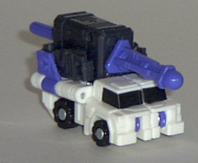
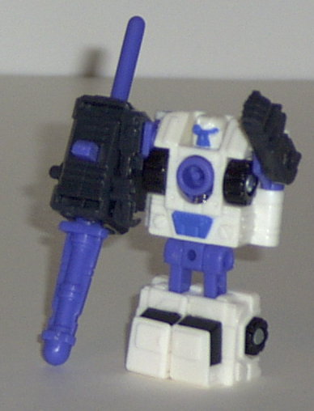
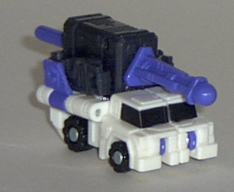
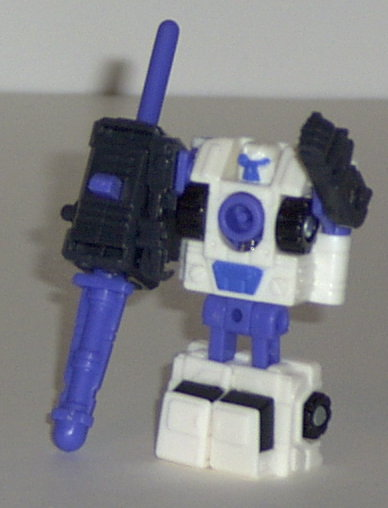
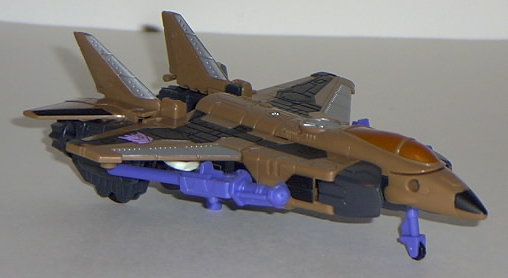
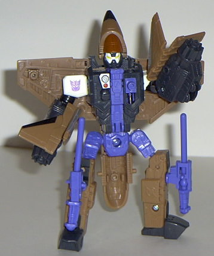

Inferno
(Powerlinx)
Inferno
(Powerlinx)
 
Allegiance : Minicon
Size : Mini-Con
Difficulty of Transformation : Very Easy
Color Scheme : White, bluish black, periwinkle, and some black
Rating : 7.0
(NOTE: Because this set is a repaint, this is not a full-blown review. This mainly covers any changes made to the set and the color scheme, and merely compares it to the original Thrust w/ Inferno. For a review on the mold itself, read the review of Armada Thrust w/ Inferno here .)
Inferno
(Powerlinx)


Allegiance
: Minicon
Size
: Mini-Con
Difficulty of Transformation
: Very
Easy
Color Scheme
: White, bluish black,
periwinkle, and some black
Rating
: 7.0
Powerlinx Inferno's color
scheme is definitely a radical departure from his older version's- instead
of being given a dull and worn look, Inferno has a much lighter, "fresh"
color scheme. The white, black, and periwinkle go marvelously with one
another, but that bluish-black used for his missile launcher and arms...
not so good. It's the color of a bad bruise, yick. Why couldn't they have
just made it solid black instead? Although, as much as I like the color
scheme by itself, it isn't quite as fitting a mobile artillery truck as
the old green scheme was.
No mold changes have
been made to Powerlinx Inferno.
Powerlinx Inferno is
a good Minicon with a good color scheme. However, it's not quite up to
par with the older one, since it's not as fitting.
 Thrust
(Powerlinx)
Thrust
(Powerlinx)


Allegiance
: Decepticon
Size
: Super-Con
Difficulty of Transformation:
Easy
Color Scheme
: Muddy brown, bluish
black, periwinkle, black, and some white, metallic bronze, silver, light
red, and bright yellow
Powerlinx ports
: 4 (1 gimmicked)
Rating
: 8.5
Powerlinx Thrust's color
scheme is a bit of a throwback to the Generation One plane named
Dirge
.
Granted, the color schemes of them both are a bit different, but the similarity
is apparent. Overall, brown seems to work for Thrust better than gray-and-green
did; it seems to suit a thruster plane more, for some reason. The black
and silver paint detailing on the wings is really eye-catching, and the
periwinkle and brown go together well. Additional silver paint detailing
on some of Thrust's mechanical innards and the bronze stuff on the cockpit
is also great. Additionally, I really like the paint "mask" on Thrust's
face- it makes him look like a superhero. This is especially appreciated,
since the older Thrust barely had any paint on his face at all. However,
there's that darn problem of the bluish-black again; it's just a horrid
color to use, especially when just plain black would have worked better.
No mold changes have
been made to Powerlinx Thrust.
Although not leagues
greater than his predecessor, Powerlinx Thrust is a noticeable step above
the original Thrust color-scheme wise, and with the exception of the bluish-black,
looks great whether you're playing with it or whether it's just sitting
on a shelf. Recommended.
No Stats
Review by Beastbot